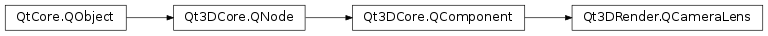

Qt3DRender.QCameraLens¶
Synopsis¶
Functions¶
- def
aspectRatio() - def
bottom() - def
exposure() - def
farPlane() - def
fieldOfView() - def
left() - def
nearPlane() - def
projectionMatrix() - def
projectionType() - def
right() - def
setFrustumProjection(left, right, bottom, top, nearPlane, farPlane) - def
setOrthographicProjection(left, right, bottom, top, nearPlane, farPlane) - def
setPerspectiveProjection(fieldOfView, aspect, nearPlane, farPlane) - def
top() - def
viewAll(cameraId) - def
viewEntity(entityId, cameraId)
Slots¶
- def
setAspectRatio(aspectRatio) - def
setBottom(bottom) - def
setExposure(exposure) - def
setFarPlane(farPlane) - def
setFieldOfView(fieldOfView) - def
setLeft(left) - def
setNearPlane(nearPlane) - def
setProjectionMatrix(projectionMatrix) - def
setProjectionType(projectionType) - def
setRight(right) - def
setTop(top)
Signals¶
- def
aspectRatioChanged(aspectRatio) - def
bottomChanged(bottom) - def
exposureChanged(exposure) - def
farPlaneChanged(farPlane) - def
fieldOfViewChanged(fieldOfView) - def
leftChanged(left) - def
nearPlaneChanged(nearPlane) - def
projectionMatrixChanged(projectionMatrix) - def
projectionTypeChanged(projectionType) - def
rightChanged(right) - def
topChanged(top) - def
viewSphere(center, radius)
Detailed Description¶
Qt3DRender.QCameraLensspecifies the projection matrix that will be used to define a Camera for a 3D scene.
-
class
PySide2.Qt3DRender.Qt3DRender.QCameraLens([parent=nullptr])¶ Parameters: parent – PySide2.Qt3DCore.Qt3DCore::QNodeConstructs a
QCameraLenswith givenparent
-
PySide2.Qt3DRender.Qt3DRender.QCameraLens.ProjectionType¶ Specifies which parameters of
Qt3DRender.QCameraLensare used to compute the projection matrix.Constant Description Qt3DRender.QCameraLens.OrthographicProjection Orthogonal projection Qt3DRender.QCameraLens.PerspectiveProjection Perspective projection Qt3DRender.QCameraLens.FrustumProjection Frustum projection Qt3DRender.QCameraLens.CustomProjection Custom user-defined projection
-
PySide2.Qt3DRender.Qt3DRender.QCameraLens.aspectRatio()¶ Return type: PySide2.QtCore.floatSee also
PySide2.Qt3DRender.Qt3DRender::QCameraLens.setAspectRatio()
-
PySide2.Qt3DRender.Qt3DRender.QCameraLens.aspectRatioChanged(aspectRatio)¶ Parameters: aspectRatio – PySide2.QtCore.float
-
PySide2.Qt3DRender.Qt3DRender.QCameraLens.bottom()¶ Return type: PySide2.QtCore.floatSee also
PySide2.Qt3DRender.Qt3DRender::QCameraLens.setBottom()
-
PySide2.Qt3DRender.Qt3DRender.QCameraLens.bottomChanged(bottom)¶ Parameters: bottom – PySide2.QtCore.float
-
PySide2.Qt3DRender.Qt3DRender.QCameraLens.exposure()¶ Return type: PySide2.QtCore.floatSee also
PySide2.Qt3DRender.Qt3DRender::QCameraLens.setExposure()
-
PySide2.Qt3DRender.Qt3DRender.QCameraLens.exposureChanged(exposure)¶ Parameters: exposure – PySide2.QtCore.float
-
PySide2.Qt3DRender.Qt3DRender.QCameraLens.farPlane()¶ Return type: PySide2.QtCore.floatSee also
PySide2.Qt3DRender.Qt3DRender::QCameraLens.setFarPlane()
-
PySide2.Qt3DRender.Qt3DRender.QCameraLens.farPlaneChanged(farPlane)¶ Parameters: farPlane – PySide2.QtCore.float
-
PySide2.Qt3DRender.Qt3DRender.QCameraLens.fieldOfView()¶ Return type: PySide2.QtCore.floatSee also
PySide2.Qt3DRender.Qt3DRender::QCameraLens.setFieldOfView()
-
PySide2.Qt3DRender.Qt3DRender.QCameraLens.fieldOfViewChanged(fieldOfView)¶ Parameters: fieldOfView – PySide2.QtCore.float
-
PySide2.Qt3DRender.Qt3DRender.QCameraLens.left()¶ Return type: PySide2.QtCore.floatSee also
PySide2.Qt3DRender.Qt3DRender::QCameraLens.setLeft()
-
PySide2.Qt3DRender.Qt3DRender.QCameraLens.leftChanged(left)¶ Parameters: left – PySide2.QtCore.float
-
PySide2.Qt3DRender.Qt3DRender.QCameraLens.nearPlane()¶ Return type: PySide2.QtCore.floatSee also
PySide2.Qt3DRender.Qt3DRender::QCameraLens.setNearPlane()
-
PySide2.Qt3DRender.Qt3DRender.QCameraLens.nearPlaneChanged(nearPlane)¶ Parameters: nearPlane – PySide2.QtCore.float
-
PySide2.Qt3DRender.Qt3DRender.QCameraLens.projectionMatrix()¶ Return type: PySide2.QtGui.QMatrix4x4See also
PySide2.Qt3DRender.Qt3DRender::QCameraLens.setProjectionMatrix()
-
PySide2.Qt3DRender.Qt3DRender.QCameraLens.projectionMatrixChanged(projectionMatrix)¶ Parameters: projectionMatrix – PySide2.QtGui.QMatrix4x4
-
PySide2.Qt3DRender.Qt3DRender.QCameraLens.projectionType()¶ Return type: PySide2.Qt3DRender.Qt3DRender::QCameraLens.ProjectionTypeSee also
PySide2.Qt3DRender.Qt3DRender::QCameraLens.setProjectionType()
-
PySide2.Qt3DRender.Qt3DRender.QCameraLens.projectionTypeChanged(projectionType)¶ Parameters: projectionType – PySide2.Qt3DRender.Qt3DRender::QCameraLens.ProjectionType
-
PySide2.Qt3DRender.Qt3DRender.QCameraLens.right()¶ Return type: PySide2.QtCore.floatSee also
PySide2.Qt3DRender.Qt3DRender::QCameraLens.setRight()
-
PySide2.Qt3DRender.Qt3DRender.QCameraLens.rightChanged(right)¶ Parameters: right – PySide2.QtCore.float
-
PySide2.Qt3DRender.Qt3DRender.QCameraLens.setAspectRatio(aspectRatio)¶ Parameters: aspectRatio – PySide2.QtCore.floatSets the projection’s aspect ratio to
aspectRatio. This triggers a projection matrix update.Note
this has no effect if the projection type is not
Qt3DRender.QCameraLens.PerspectiveProjection.See also
PySide2.Qt3DRender.Qt3DRender::QCameraLens.aspectRatio()
-
PySide2.Qt3DRender.Qt3DRender.QCameraLens.setBottom(bottom)¶ Parameters: bottom – PySide2.QtCore.floatSets the projection’s bottom window coordinate to
bottom. This triggers a projection matrix update.Note
this has no effect if the projection type is
Qt3DRender.QCameraLens.PerspectiveProjection.See also
PySide2.Qt3DRender.Qt3DRender::QCameraLens.bottom()
-
PySide2.Qt3DRender.Qt3DRender.QCameraLens.setExposure(exposure)¶ Parameters: exposure – PySide2.QtCore.floatSets the camera lens’
exposureSee also
PySide2.Qt3DRender.Qt3DRender::QCameraLens.exposure()
-
PySide2.Qt3DRender.Qt3DRender.QCameraLens.setFarPlane(farPlane)¶ Parameters: farPlane – PySide2.QtCore.floatSets the projection’s far plane to
farPlane. This triggers a projection matrix update.See also
PySide2.Qt3DRender.Qt3DRender::QCameraLens.farPlane()
-
PySide2.Qt3DRender.Qt3DRender.QCameraLens.setFieldOfView(fieldOfView)¶ Parameters: fieldOfView – PySide2.QtCore.floatSets the projection’s field of view to
fieldOfViewdegrees. This triggers a projection matrix update.Note
this has no effect if the projection type is not
Qt3DRender.QCameraLens.PerspectiveProjection.See also
PySide2.Qt3DRender.Qt3DRender::QCameraLens.fieldOfView()
-
PySide2.Qt3DRender.Qt3DRender.QCameraLens.setFrustumProjection(left, right, bottom, top, nearPlane, farPlane)¶ Parameters: - left –
PySide2.QtCore.float - right –
PySide2.QtCore.float - bottom –
PySide2.QtCore.float - top –
PySide2.QtCore.float - nearPlane –
PySide2.QtCore.float - farPlane –
PySide2.QtCore.float
Defines an orthographic projection based on
left,right,bottom,top,nearPlane,farPlane.- left –
-
PySide2.Qt3DRender.Qt3DRender.QCameraLens.setLeft(left)¶ Parameters: left – PySide2.QtCore.floatSets the projection’s lower left window coordinate to
left. This triggers a projection matrix update.Note
this has no effect if the projection type is
Qt3DRender.QCameraLens.PerspectiveProjection.See also
PySide2.Qt3DRender.Qt3DRender::QCameraLens.left()
-
PySide2.Qt3DRender.Qt3DRender.QCameraLens.setNearPlane(nearPlane)¶ Parameters: nearPlane – PySide2.QtCore.floatSets the projection’s near plane to
nearPlane. This triggers a projection matrix update.See also
PySide2.Qt3DRender.Qt3DRender::QCameraLens.nearPlane()
-
PySide2.Qt3DRender.Qt3DRender.QCameraLens.setOrthographicProjection(left, right, bottom, top, nearPlane, farPlane)¶ Parameters: - left –
PySide2.QtCore.float - right –
PySide2.QtCore.float - bottom –
PySide2.QtCore.float - top –
PySide2.QtCore.float - nearPlane –
PySide2.QtCore.float - farPlane –
PySide2.QtCore.float
Defines an orthographic projection based on
left,right,bottom,top,nearPlane,farPlane.- left –
-
PySide2.Qt3DRender.Qt3DRender.QCameraLens.setPerspectiveProjection(fieldOfView, aspect, nearPlane, farPlane)¶ Parameters: - fieldOfView –
PySide2.QtCore.float - aspect –
PySide2.QtCore.float - nearPlane –
PySide2.QtCore.float - farPlane –
PySide2.QtCore.float
Defines a perspective projection based on
fieldOfView,aspectRatio,nearPlane,farPlane.- fieldOfView –
-
PySide2.Qt3DRender.Qt3DRender.QCameraLens.setProjectionMatrix(projectionMatrix)¶ Parameters: projectionMatrix – PySide2.QtGui.QMatrix4x4Sets the project matrix to
projectionMatrix.Note
This will set the projection type to
Qt3DRender.QCameraLens.CustomProjectionand thus ignore all other camera parameters that might have been specified.See also
PySide2.Qt3DRender.Qt3DRender::QCameraLens.projectionMatrix()
-
PySide2.Qt3DRender.Qt3DRender.QCameraLens.setProjectionType(projectionType)¶ Parameters: projectionType – PySide2.Qt3DRender.Qt3DRender::QCameraLens.ProjectionTypeSets the lens’ projection type
projectionType.Note
Qt3DRender::QCameraLens::Frustum and
Qt3DRender.QCameraLens.PerspectiveProjectionare two different ways of specifying the same projection.See also
PySide2.Qt3DRender.Qt3DRender::QCameraLens.projectionType()
-
PySide2.Qt3DRender.Qt3DRender.QCameraLens.setRight(right)¶ Parameters: right – PySide2.QtCore.floatSets the projection’s upper right window coordinate to
right. This triggers a projection matrix update.Note
this has no effect if the projection type is
Qt3DRender.QCameraLens.PerspectiveProjection.See also
PySide2.Qt3DRender.Qt3DRender::QCameraLens.right()
-
PySide2.Qt3DRender.Qt3DRender.QCameraLens.setTop(top)¶ Parameters: top – PySide2.QtCore.floatSets the projection’s top window coordinate to
top. This triggers a projection matrix update.Note
this has no effect if the projection type is
Qt3DRender.QCameraLens.PerspectiveProjection.See also
PySide2.Qt3DRender.Qt3DRender::QCameraLens.top()
-
PySide2.Qt3DRender.Qt3DRender.QCameraLens.top()¶ Return type: PySide2.QtCore.floatSee also
PySide2.Qt3DRender.Qt3DRender::QCameraLens.setTop()
-
PySide2.Qt3DRender.Qt3DRender.QCameraLens.topChanged(top)¶ Parameters: top – PySide2.QtCore.float
-
PySide2.Qt3DRender.Qt3DRender.QCameraLens.viewAll(cameraId)¶ Parameters: cameraId – PySide2.Qt3DCore.Qt3DCore::QNodeId
-
PySide2.Qt3DRender.Qt3DRender.QCameraLens.viewEntity(entityId, cameraId)¶ Parameters: - entityId –
PySide2.Qt3DCore.Qt3DCore::QNodeId - cameraId –
PySide2.Qt3DCore.Qt3DCore::QNodeId
- entityId –
-
PySide2.Qt3DRender.Qt3DRender.QCameraLens.viewSphere(center, radius)¶ Parameters: - center –
PySide2.QtGui.QVector3D - radius –
PySide2.QtCore.float
- center –
© 2018 The Qt Company Ltd. Documentation contributions included herein are the copyrights of their respective owners. The documentation provided herein is licensed under the terms of the GNU Free Documentation License version 1.3 as published by the Free Software Foundation. Qt and respective logos are trademarks of The Qt Company Ltd. in Finland and/or other countries worldwide. All other trademarks are property of their respective owners.